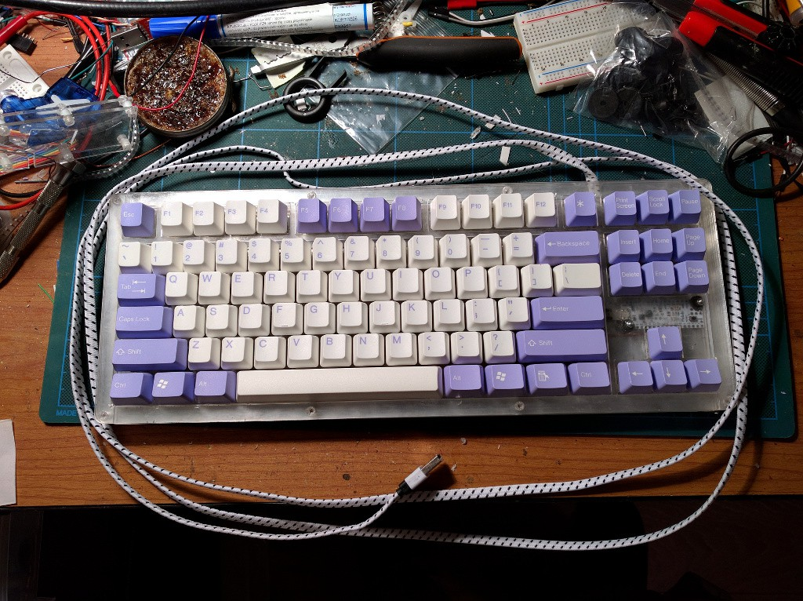

Electronics¶
Published on 2015-12-19 in Alpen Clack.
I fixed the switches in place with a little bit of glue (they can still be removed if needed), and I soldered the horizontal connections with a thick copper wire. Then I drilled the mounting holes for the A* board, and secured it in place with screws. I also drilled the hole for the USB cable, cut the plug from it, passed it through the hole and re-soldered a “naked” plug back. The board is mounted above the arrow keys in such a way, that you can see the LEDs on it – I will use those for CapsLock and so on. Finally, I taped the metal back- plate with some transparent tape, so that there are no shorts, and screwed it to the back – to make sure everything fits properly. The keyboard got much sturdier now, and I think it won’t need additional enforcing.

Next step is soldering the SMD diodes and the vertical columns, then connecting it all to the board, and modifying the firmware for this particular layout. It’s almost finished.